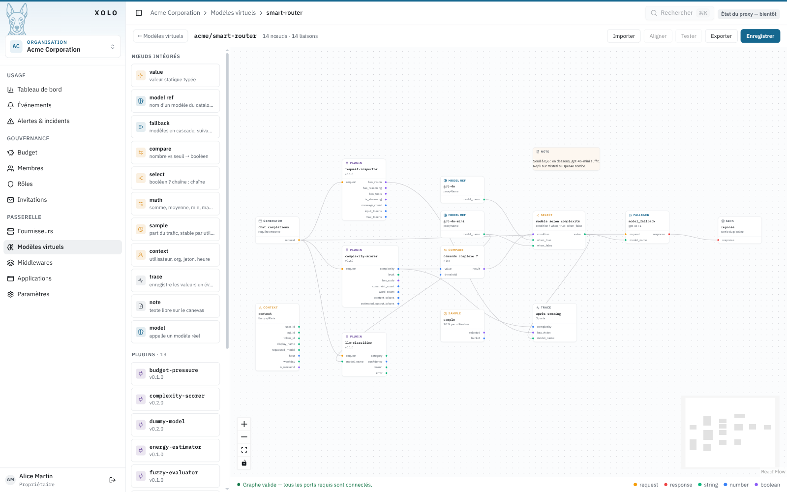

Nœuds de pipeline : intégrés et plugins¶
Un pipeline de modèle virtuel ou de middleware est un graphe. Chaque nœud lit des valeurs sur ses ports d'entrée et en produit sur ses ports de sortie. Le moteur exécute les nœuds dans l'ordre des liaisons, du nœud generator jusqu'au nœud sink.
Cette page décrit chaque nœud livré avec Xolo : ce qu'il fait, ses ports, ce qu'on configure, et quand s'en servir. Pour écrire un plugin sur mesure, voir le guide de développement.

La palette de gauche liste les nœuds intégrés puis les plugins chargés. Le panneau de droite configure le nœud sélectionné et rappelle ses ports.

Les ports¶
Un port a un type. L'éditeur n'accepte de relier qu'une sortie et une entrée de même type.
| Type | Contenu |
|---|---|
request |
La requête de complétion, messages compris |
response |
La réponse du modèle |
string |
Une chaîne, le plus souvent un nom de modèle |
number |
Un nombre, le plus souvent un score entre 0 et 1 |
boolean |
Vrai ou faux |
Un port d'entrée marqué requis doit être connecté, sinon le bandeau en bas de l'éditeur le signale et le pipeline ne s'enregistre pas. Un port d'entrée non requis peut rester libre. Le nœud applique alors sa valeur de configuration, ou ignore ce port.
Un nœud sans port d'entrée s'exécute au début. C'est le cas de value, model_ref, sample et context.
Chaque nœud intégré accepte un libellé libre, dans le panneau de droite. Quand il est renseigné, la carte l'affiche à la place de son résumé calculé. « modèle selon complexité » sur un select ou « soirée ? » sur un compare disent ce que le nœud décide, là où « > 0,6 » dit seulement comment il est réglé. Sur un trace, le libellé devient aussi le message de l'événement.
Nœuds intégrés¶
Ils font partie du serveur. Ils n'exigent aucun binaire de plugin et se comportent de la même façon sur toutes les installations. Chacun est décrit dans Nœuds intégrés.
| Nœud | Rôle |
|---|---|
generator et sink |
Entrée et sortie obligatoires du pipeline |
model |
Appelle un modèle réel ou virtuel |
model_ref |
Émet le nom d'un modèle choisi dans une liste |
model_fallback |
Essaie plusieurs modèles dans l'ordre jusqu'au premier qui répond |
value |
Émet une valeur fixe |
compare |
Compare un nombre à un seuil et émet un booléen |
select |
Choisit une chaîne selon un booléen |
math |
Combine jusqu'à quatre nombres |
sample |
Sélectionne un pourcentage des requêtes |
context |
Expose l'heure, le jour et d'autres faits sur la requête |
trace |
Enregistre des valeurs dans un événement |
note |
Bloc de texte sur le canevas, sans effet |
Plugins livrés par défaut¶
Les plugins sont des binaires séparés, chargés depuis XOLO_PLUGINS_DIR. L'image Docker officielle les embarque tous. Un plugin absent d'une installation apparaît en erreur dans l'éditeur.
Ceux qui ont leur propre écran de configuration l'ouvrent dans le panneau de droite. Les autres présentent un formulaire généré depuis leur schéma de configuration.
Analyse de la requête¶
Ces plugins lisent la requête et produisent des mesures. Ils ne modifient rien. Ils sont pensés pour alimenter un routage : leurs sorties vont dans compare, math, select, fuzzy-evaluator ou script-processor.
| Plugin | Rôle |
|---|---|
request-inspector |
Relève les faits structurels |
complexity-scorer |
Évalue la difficulté de la demande courante |
text-classifier |
Range la demande dans une catégorie sans appeler de modèle |
llm-classifier |
Pose la question à un modèle de l'organisation, via la passerelle |
energy-estimator |
Estime l'énergie d'une inférence |
budget-pressure |
Mesure la part du budget déjà consommée par l'utilisateur |
prompt-guard |
Cherche les tentatives de manipulation de l'assistant sans appeler de modèle |
Décision¶
Ces plugins transforment des mesures en décision quand compare et select ne suffisent plus.
| Plugin | Rôle |
|---|---|
fuzzy-evaluator |
Applique des règles de logique floue à des nombres |
script-processor |
Exécute un script Tengo avec des ports libres |
Transformation de la requête¶
| Plugin | Rôle |
|---|---|
system-prompt |
Ajoute un prompt système, ou remplace celui de la requête |
pseudonymizer |
Remplace les données personnelles par des pseudonymes avant l'appel au modèle, puis rétablit les valeurs d'origine dans la réponse |
time-restriction |
Refuse les requêtes hors des plages horaires hebdomadaires configurées, avec un fuseau horaire |
Outils et test¶
| Plugin | Rôle |
|---|---|
mcp-bridge |
Connecte un serveur MCP et expose ses outils au modèle |
dummy-model |
Remplace le modèle par une réponse forgée |
Quatre assemblages types¶
Garde-fou sans blocage. prompt-guard.suspicious va dans select, avec en when_true un model_ref vers un modèle virtuel dépourvu d'outils et en when_false le modèle habituel. Une requête douteuse est servie, mais sans pouvoir agir. Un trace branché sur risk et top_rule garde la trace de ce qui a déclenché.
Routage par capacité. request-inspector.has_vision va dans select, avec un model_ref vision en when_true et le modèle habituel en when_false. La sortie alimente model.model_name.
Routage horaire avec repli. context.hour entre dans compare avec le seuil 19 et l'opérateur gte, select bascule sur le modèle léger le soir, et model_fallback garde un second fournisseur en réserve.

Canari. sample à 10 % par utilisateur, select entre le nouveau modèle et l'ancien, un trace qui enregistre selected et le nom retenu, une note qui dit quand monter le pourcentage. Après une semaine d'événements, on monte ou on retire le nœud.